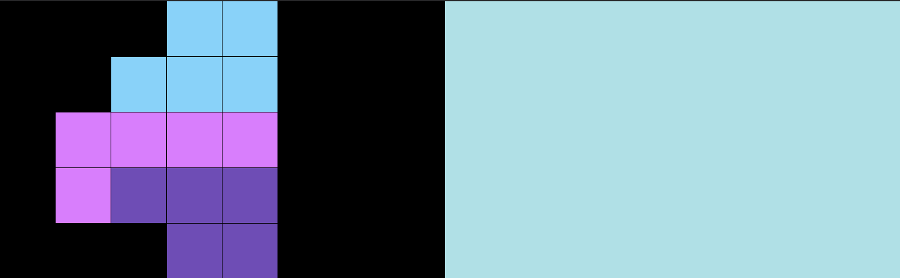
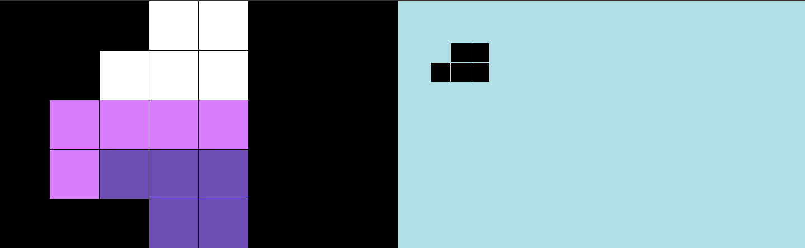
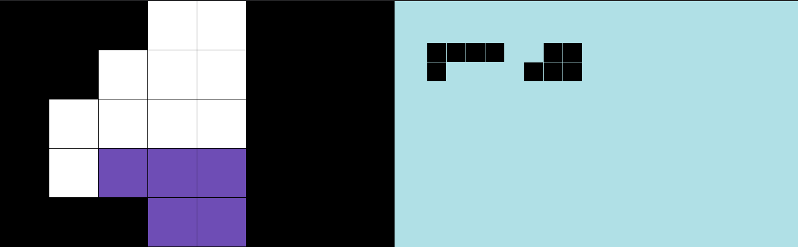
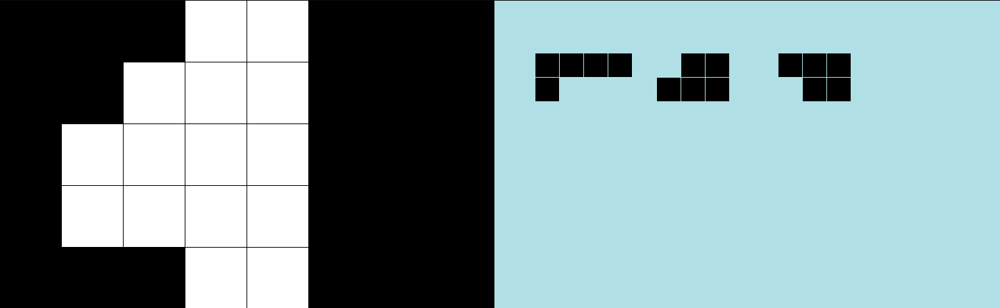

Пентамино - плоские фигуры, каждая из которых состоит из пяти одинаковых квадратов. Этим же словом иногда называют головоломку, в которой такие фигуры требуется укладывать в прямоугольник или другие формы.



